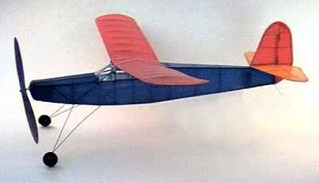
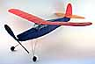
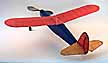
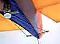

following images may be clicked for larger views.
|  | This model has had a checkered career. After being crushed, it collected dust for almost 14 months. Finally, it is back in flying order. After regluing the fuselage, I spent a lot of time sanding the framework to remove all traces of the previous covering, as well as smoothing some of the "less pretty" repairs. Fortunately, I still had enough of the original blue tissue for recovering the model. |  |
The horizontal stabilizer was also replaced with completely new wood, save a couple parts. The original printwood stab tips from the kit were salvaged to save a bit of work. As I had previously exhausted the kit supply of orange tissue, the JCI stock was surveyed. Yellow was chosen, and the stab was covered. The model was covered using nitrate dope from Allen Heinrich of Aerodyne. 3-4 thinned coats were brushed onto the framework, and the tissue was applied dry using thinner to soften the underlying dope. The tissue was shrunk with water once secured. As I tend toward impatience, a heat gun was used to dry/shrink the tssue once it was sprayed. It is fun to watch the loose wet tissue practically shake off the water as it snaps taught. 5-6 coats of 50/50 nitrate were then brushed on the tissue, again, carefully using the heat gun to accelerate the process.
I do not recommend anyone else try this process. Nitrate dope is known to be quite flammable, and using the heat gun in a room full of nitrate fumes is probably not the smartest thing I have done. Also, unless you are very careful, you will overheat the dope, and it will blister and bubble, forming a large number of crusty white spots. These spots look terrible, and another heavy coat of dope must be added to remove them. If you try to let the final coat air dry, the tissue will slacken a bit, and the nice tight covering you have been seeing will be gone. This means another coat, more weight, and more heat, A delicate balance, and not likely the safest process.
| While rebuilding the tail, I implimented an idea I have had for a long time. As you can see in the picture to the right, I have rigged thread as a pull-pull control for the rudder. A 2-56 nylon bolt is threaded into a short piece of inner nyrod which is secured to the fuselage in the tail bay left open for rear motor peg access. The rudder got a 1/64" ply control horn, and was hinged using thread hinges. |  |
Click to read other comments about the FA Moth.
Return to
damage | model index
Copyright 1998, Thayer Syme. All rights reserved